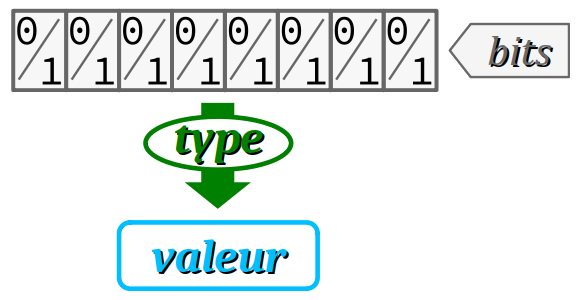

On appelle donnée toute information mémorisée dans un espace de stockage (mémoire) qui lui est alloué. En programmation, la faculté de mémoriser une information suppose l'aptitude à y accéder, c'est‑à‑dire consulter et éventuellement modifier sa valeur. Pour cela, il faut nécessairement être capable d'identifier la donnée. Le plus souvent, on lui donne un nom qu'on appelle identificateur. Ce procédé s'appelle une déclaration.
Généralement, on parle W :
- de donnée variable lorsque sa valeur est mutable, c'est‑à‑dire susceptible de changer au cours de l'exécution d'un programme,
- et de donnée constante lorsque sa valeur est immuable (en anglais immutable).
En langages C et C++, tous ces aspects recèlent de nombreuses particularités qui requièrent, dès les premiers programmes, une grande vigilance. Ce chapitre est donc consacré à :
- passer en revue tous les généralités relatives à la déclaration des données, qu'il est indispensable d'avoir à l'esprit pour comprendre ensuite toutes les particularités ;
- détailler les bases de la syntaxe des instructions de déclaration des variables et des constantes ;
- préciser le codage des expressions d'initialisation que ces instructions peuvent comporter ;
sachant que d'autres éléments de langages relatifs à la déclaration des données seront apportés dans les chapitres suivants, au fur et à mesure de l'étude des types de données élémentaires (partie C3) et structurées (partie C5).
Généralités
Notions de donnée, de valeur et de type
Les notions de donnée, de valeur et de type sont trois notions fondamentales indissociables en programmation. Elles font appel aux notions subalternes d'encodage en mémoire et d'interprétation.
En programmation, on appelle donnée une information stockée en mémoire – c'est‑à‑dire matériellement encodée durant l'exécution d'un programme par un ensemble de bits (c'est une représentation dite de bas niveau).
De plus, une donnée prend toujours une valeur (constante ou variable) conformément à un type :
- la valeur est l'interprétation de haut niveau que confère le programme aux bits de la donnée, de sorte qu'on puisse donner lui un sens : tel nombre, telle chaîne de caractères, etc.
- le type d'une donnée est une appellation catégorielle qui détermine la valeur de la donnée à partir de son encodage en mémoire : entier, décimal, caractère, etc.
En langages C et C++, une donnée peut figurer dans le code source d'un programme :
- soit de façon anonyme, sous forme d'une constante littérale, c'est‑à‑dire d'une valeur codée dans un format qui détermine son type implicite ;
- soit de façon nommée :
- sous la forme d'un identificateur déclaré choisi par le codeur et associé à un type explicite ;
- ou encore sous la forme d'une pseudo‑constante définie via la directive
#defineavec un identificateur, mais alors avec un type implicite comme pour une constante littérale (cf. chap. C4‑III ).
Par l'instruction ci‑dessous, on déclare une donnée variable :
int myFirstVariable = 13;
- explicitement de type
int(entier standard) ; - nommée
myFirstVariable– c'est son identificateur ; - de valeur initiale spécifiée par la constante littérale codée
13, implicitement interprétée par le compilateur comme étant de typeint.
Sur un PC récent à architecture 32 ou 64 bits, quel que soit le système d'exploitation, la valeur d'une donnée de type int est encodée en mémoire sur 4 octets, soit 4 × 8 = 32 bits. Dans le cas présent, ces 32 bits représentant la valeur 13 vaudraient :
00000000 00000000 00000000 00001101
Remarque. Si on avait déclaré myFirstVariable de type float (décimal à virgule flottante simple précision), alors durant l'exécution du programme, les mêmes 32 bits seraient interprétés par la machine comme une valeur complètement différente (environ 1,82 × 10−44). On peut le vérifier en exécutant dans un environnement de programmation en ligne comme OnlineGDB le programme ci‑dessous :
#include <stdio.h>
int main(void) {
int myFirstVariable = 13;
float * p = (float*) &myFirstVariable;
printf("%g\n", *p);
return 0;
}
où la ligne nº 5 déclare un pointeur p (cf. chap. C5‑I ) qui permet d'interpréter la valeur de myFirstVariable dans le type float.
Les normes des langages C et C++ :
- distinguent fondamentalement la notion de donnée de celle de fonction ; en effet, dans un programme, une fonction possède bien un identificateur, un type et même une adresse mais elle n'a pas de valeur à proprement parler ;
- emploient le terme d'« objet » plutôt que de donnée ; toutefois, il est pédagogiquement préférable de réserver le terme d'objet pour désigner spécifiquement l'instance d'une classe dans le cadre de la programmation orientée objet.
- emploient le terme de « représentation des types » plutôt que d'encodage des données ; toutefois, le terme représentation appartient au vocabulaire général, il est préférable de pouvoir l'employer sans risque de confusion avec un sens technique particulier ; de plus, le mot encodage W est plus évocateur de ce que forment les bits d'une donnée, à savoir le résultat produit par un algorithme de numérisation.
Pourquoi déclarer ?
En règle générale, dans un langage compilé (et c'est le cas en C et C++), une instruction de déclaration W est un préalable obligatoire pour pouvoir « employer » une donnée nommée (constante ou variable) dans un fichier source du programme.
En programmation, « employer » une donnée signifie lire ou modifier sa valeur et nécessite pour cela de l'appeler par son nom – on dit aussi l'invoquer.
En effet, c'est par une telle déclaration que le compilateur est capable de bien gérer l'espace mémoire requis par toutes les données que le programme utilise.
C'est également un aspect décisif pour la bonne lisibilité du code source. Pour toute donnée nommée, on peut se référer à des spécifications précises sur les caractéristiques de la donnée (variable ou constante, type de valeurs, classe d'allocation, etc.).
Considérer une déclaration comme une instruction peut être contesté au regard de la norme du langage C (cf. C où les sections 6.7 Declarations et 6.8 Statements and blocs sont distinctes).
En effet, la déclaration d'une donnée globale est traitée par le compilateur par la réservation d'un espace mémoire dans le code exécutable du programme ; elle ne déclenche pas d'action lors de l'exécution. Toutefois :
- si la déclaration est codée dans un bloc avec une classe d'allocation automatique (cf. infra ), alors elle déclenche bien une action lors de l'exécution (la réservation d'un espace mémoire dans la pile – cf. chap. C4‑II ), même si cette action opère en arrière-plan ;
- une déclaration obéit au même schéma syntaxique que celui d'une instruction simple, avec le codade du délimiteur de fin
;.
D'ailleurs, la norme du langage C++ considère les déclarations locales comme des instructions (cf. C++ à la section 9.6 Declaration statement).
Où déclarer ?
Dans les programmes écrits en C/C++, contrairement à d'autres langages, il n'y a pas de zone spécifique pour les déclarations de données. Ces dernières peuvent être réparties partout dans les fichiers du code source.
Mais la zone de déclaration d'une donnée n'est pas indifférente. Elle impacte notamment la visibilité de la donnée, c'est‑à‑dire le fait qu'on puisse ou non l'utiliser :
- si la déclaration s'insère dans un bloc
{ }, on dit que la donnée est locale au sens où elle est visible seulement : - dans son bloc,
- et pour les instructions qui lui succèdent ;
- a contrario, si une donnée est déclarée hors de tout bloc, on dit qu'elle est globale ; elle est alors visible dans tous les blocs successifs à sa déclaration (dans le fichier).
La zone de déclaration d'une donnée impacte également sa classe d'allocation, aspect qui est introduit infra .
Bonnes pratiques
Même si les déclarations peuvent être codées n'importe où dans le code source, il est recommandé, pour une bonne lisibilité du code, d'adopter les bonnes pratiques suivantes :
- regrouper les lignes de déclaration,
- privilégier les premières lignes des fichiers et des blocs.
En principe, cette bonne pratique permet à tout lecteur du code source de faciliter la recherche de la déclaration des données employées dans un programme, notamment pour connaître leur type.
Toutefois, il ne s'agit que d'une recommandation car la plupart des éditeurs de code offrent des fonctions de recherche automatique de déclaration, via des commandes accessibles par menu contextuel (typiquement, par clic-droit sur toute occurrence d'un identificateur de donnée). Ces fonctionnalités se révèlent particulièrement efficace dans le cadre d'une programmation multi‑fichiers.
Comment déclarer ?
Le mode opératoire de déclaration d'une donnée présenté ci‑après est général et simplifié. Des formes plus complexes seront détaillées dans les parties C3, C4 et C5 du cours.
D'une manière générale, dans un programme, la création d'une donnée nommée recèle deux aspects :
- la déclaration d'un identificateur pour appeler la donnée, et lui attribuer un type de valeurs possibles (entières, décimales, etc.) ;
- la définition d'un espace mémoire adressable qui sera alloué pour le stockage de la valeur de la donnée.
En langages C et C++, la distinction de ces deux aspects est importante. En effet, l'allocation mémoire peut invervenir :
- soit lors de la compilation du programme – et on parle alors de données de classe statique ;
- soit lors de l'exécution du programme – avec deux cas de figure :
- celui des données dites de classe automatique si l'espace mémoire qui leur est alloué est de taille fixe ;
- celui des données dites dynamiques si l'espace mémoire qui leur est alloué est de taille variable ;
sachant que :
- une variable globale est toujours de classe statique ;
- une variable locale est par défaut de classe automatique.
Les notions de classes d'allocation statique et automatique seront approfondies au chapitre C4‑II .
La notion de variable dynamique est abordée seulement dans la partie C6 du cours. C'est dans ce dernier cas qu'intervient la distinction entre déclaration et définition.
Syntaxes de déclaration
Déclaration d'une variable
En langage C, une instruction de déclaration d'une variable obéit au schéma syntaxique suivant :
descripteur de type
identificateur
[
= expression d'initialisation
]
;
Attention : ci‑dessus, les crochets gris [ ] ne sont pas des éléments du code, ils délimitent une partie optionnelle de l'instruction. On dit qu'il font partie du métalangage W.
Dans ce schéma syntaxique :
- le descripteur de type est une suite de mots‑clefs ou d'identificateurs de types qui spécifient la catégorie de valeurs que la variable peut prendre ;
- omis si la variable est de classe statique, et alors la variable est implicitement de type
int(cf. ci‑dessous), mais cette option est vivement déconseillée pour des raisons évidentes de bonne lisibilité ; - standard dans le langage, notamment :
-
boolpour boolean, qui autorise seulement deux valeurs possibles,falseoutrue; -
intpour integer, c'est‑à‑dire à valeurs entières positives (0,1,2,3…) ou négatives (-1,-2…) – on parle de type signé parce que ses valeurs peuvent porter un signe ; -
floatpour floating point decimal, c'est‑à‑dire à valeurs décimales comme3.14… - défini par le codeur, avec un identificateur de type déclaré à l'aide d'une instruction commençant par
typedef; - l'identificateur est le nom de la variable choisi par le codeur pour la désigner dans le code source – cf. les règles de choix au chap. C2‑II ;
-
= expression d'initialisationest l'affectation optionnelle d'une valeur initiale (en anglais, initializer) qui doit être codée par : - une expression constante (c'est‑à‑dire composée sans identificateurs de variables, par exemple
5 + 1.0/3– cf. chap. C2‑II ) si la variable est de classe statique (cf. supra ) et que l'on code en langage C ; - une expression évaluable au moment de l'exécution de l'instruction de déclaration (donc, pouvant comporter des identificateurs de variables) dans tout autre cas, c'est‑à‑dire en C++ ou si la variable est classe automatique.
unsigned, long, etc. ; En langage C, il faut une directive #include <stdbool.h> pour utiliser le type bool.
En C++, aucune directive n'est nécessaire car le type bool est intégré au noyau du langage.
Le code ci‑dessous contient quatre déclarations (lignes nº 11, 12, 16 et 17). Toutes les variables déclarées sont initialisées.
#include <stdio.h>
#include <stdbool.h>
// global variables (static)
bool isUserRegistred = true;
unsigned int pointAccount = 10 + 50; // init + bonus
int main(void) {
// local variables (automatic)
float inflationRate = 0.07;
int nextPointAccount = pointAccount * (1 + inflationRate);
// ...
}
L'étude des types sera approfondie dans toute la partie C3 du module.
Déclaration d'une constante
On rappelle qu'une constante est une donnée dont, en principe, le compilateur interdit tout changement de valeur par les instructions du programme et lors de son exécution.
Pour déclarer une constante, on emploie le schéma syntaxique suivant :
const
descripteur de type
identificateur
= expression d'initialisation
;
avec les mêmes précisions que pour la déclaration d'une variable (cf. supra ), sauf que :
- l'affectation
= expression d'initialisationn'est pas optionnelle mais requise, - la valeur résultant de l'évaluation de cette expression et affectée à la constante déclarée n'est pas seulement initiale, mais aussi définitive.
L'élément de code déterminant ici est le mot‑clef qualificateur const. Syntaxiquement, il fait partie du descripteur de type et peut prendre plusieurs positions (dans certaines déclarations complexes, il peut même présenter plusieurs occurrences).
Par ailleurs, le traitement des instructions de déclaration des constantes fait très souvent l'objet par les compilateurs de mécanismes d'optimisation. Ils seront évoqués aux chap. C4‑III et C4‑IV .
En langage C, le compilateur autorise quand même – et sans avertissement – à déclarer une constante sans lui affecter une valeur. En effet, s'il est interdit par la suite de coder directement une affectation sur cette une constante, il reste la possibilité de lui affecter une valeur via un pointeur (cf. chap. C5‑I ) au moment de l'exécution du programme.
Une telle pratique est néanmoins vivement déconseillée à un codeur peu expérimenté. D'ailleurs, elle est interdite en C++.
Avec des montages électroniques incluant une carte à microcontrôleur, il est d'usage de déclarer des constantes pour nommer les broches de la carte en fonction de leur utilisation, comme ci‑dessous :
const int ledPin = 7;
Par la suite, ce nommage rend explicite des instructions comme (cf. chap. C2‑VII ) :
digitalWrite(ledPin, HIGH);
au sens où le codeur n'a pas besoin de se souvenir de l'usage des broches par numéros, ce qui aurait été le cas si on avait codé :
digitalWrite(7, HIGH);
De plus, le fait d'employer une constante apporte une sécurité : le compilateur refusera dans la suite du code toute éventuelle réaffectation à l'identificateur ledPin, ce qui est conforme à la pratique (un câblage n'a pas vocation à être modifié en cours d'utilisation).
Remarque. La déclaration ci‑dessus aurait aussi pu être codée :
int const ledPin = 7;
mais conformément à l'usage – et donc pour une bonne lisibilité – il est préférable de privilégier la forme précédente.
De plus, on verra que la position du mot‑clef const peut être significative dans le cadre de déclarations plus complexes (cf. chap. C5‑I ).
Bonne pratique
Pour une meilleure lisibilité du code et aussi une robustesse aux erreurs de codage, il est recommandé de remplacer autant que possible les constantes littérales numériques (c'est‑à‑dire les valeurs codées directement sous forme de nombres) par des constantes déclarées (ou des pseudo-constantes – cf. chap. C4‑III ).
Cette recommandation devient une règle absolue dès lors qu'une constante littérale est employée à plusieurs reprises dans un programme pour exprimer la valeur d'un seul et même paramètre.
Faute d'appliquer cette règle, si la valeur venait à faire l'objet de modifications au cours de l'élaboration ou de la maintenance du programme, il y aurait un risque d'oublier certaines occurrences de la constante littérale dans le programme, avec les conséquences que cette mégarde pourrait avoir en termes de dysfonctionnements immédiats ou ultérieurs.
Déclarer une constante nommée pour représenter une valeur numérique permet de ne saisir cette valeur qu'une seule fois dans le code, lors de la déclaration. Toute modification de cette dernière se répercute alors automatiquement lors de la compilation à chaque occurrence de l'identificateur de la constante dans le code.
De plus, déclarer une constante nommée permet de l'identifier comme un paramètre du programme que l'on peut placer au tout début d'un fichier source pour maximiser sa lisibilité. Le codeur peut alors très facilement la trouver pour la modifier sans avoir à chercher les lignes de code où elle est employée. Cette règle vaut même si la constante n'est employée qu'une seule fois.
Reprenons un exemple du chapitre C2‑II :
if (userAge >= 18) {
Même si la constante littérale 18 n'apparaît qu'une seule fois dans le programme, il est quand même préférable de coder préalablement en début de fichier la déclaration :
const int majorityAge = 18;
pour pouvoir recoder mieux la ligne n° 10 supra comme ci‑dessous :
if (userAge >= majorityAge) {
En effet, ce paramètre d'âge peut changer selon l'époque, le pays ou même le contexte. En le définissant comme une constante déclarée, il sera plus commode par la suite de modifier sa valeur via une fonction ou une variable d'environnement.
Déclaration séquentielle de données
La syntaxe des langages C et C++ autorise, par le même descripteur de type, à coder plusieurs déclarations (et initialisations éventuellement associées) dans une même instruction.
Pour cela, il suffit simplement d'employer le symbole , pour séparer deux déclarations successives.
Dans la ligne de code académique ci‑dessous, trois variables a, b c de type int sont déclarées :
int a, b = 3, c = 10;
On peut remarquer que a ne fait pas l'objet d'une initialisation, ce qui est autorisé par la syntaxe, même si ce n'est en général pas une bonne pratique.
Bonne pratique
Une déclaration séquentielle n'apporte un gain éventuel en lisibilité :
- qu'avec des données semblables (dans ce qu'elles représentent),
- et si on leur attribue des identificateurs courts.
Sinon, la ligne de code devient vite trop longue et la déclaration de chaque donnée peut y être difficile à repérer. De plus, regrouper dans une même ligne la déclaration de plusieurs données qui n'ont rien de commun hormis leur type peut prêter à confusion : un lecteur du code pourrait se mettre à penser que les deux données sont liées…
Sauf cas particuliers, il est donc recommandé de respecter la principe :
« une donnée, une instruction de déclaration (sur une ligne distincte). »
Détails sur l'initialisation des données
Cas des variables non initialisées
Dans le cas d'une variable non initialisée dans sa déclaration, quelle valeur par défaut lui est‑elle attribuée par le compilateur ?
- si la variable est de classe statique (donc en particulier, si elle est globale), elle prend la valeur nulle ;
- si la variable est de classe automatique (a priori si elle est locale), elle prend une valeur indéterminée (en fait, déterminée par les anciennes valeurs des bits de l'espace mémoire qui lui est alloué).
Autant que possible, il est préférable d'initialiser toute variable dès sa déclaration, même si la valeur attribuée peut sembler n'avoir aucun sens.
Cela permet ensuite de tester cette variable en toutes circonstances.
On peut être amené à déclarer une variable sans lui affecter une valeur initiale, lorsque cette variable est destinée à recevoir des valeurs non prévisibles lors du codage du programme, typiquement si elle sera saisie par un utilisateur durant l'exécution :
#include <stdio.h>
int main(void) {
int patientAge; // uninitialized variable
printf("How old the patient is? ");
scanf("%d", &patientAge);
// ...
}
Pourtant, il est préférable de coder la déclaration :
int patientAge = -1;
La valeur a priori « absurde » -1 permet de coder ensuite dans le programme des tests pour savoir si la saisie n'a pas encore eu lieu (ou si elle a éventuellement échoué).
Initialisation des données en langage C++
La syntaxe de la déclaration des données du langage C reste valable en langage C++.
De surcroît, en C++, l'expression d'initialisation dans la déclaration d'une donnée n'est jamais soumise à la contrainte d'être une expression constante. Partout dans un programme, il est possible de recourir à des identificateurs de variables déjà déclarées pour coder cette expression d'initialisation.
Plus précisément, la possibilité évoquée ci‑dessus est valable quelle que soit la classe d'allocation statique ou automatique de la donnée que l'on déclare (et non pas, comme en langage C, seulement pour la classe automatique – cf. supra ).
Le code des deux déclarations de variables globales ci‑dessous est compilable en langage C++ :
float nominalVoltage = 12.0; float startingVoltage = nominalVoltage/2.0;
En langage C, la ligne n° 6 serait refusée lors de la compilation car l'expression d'initialisation nominalVoltage/2.0 n'est pas une expression constante : elle utilise l'identificateur de variable nominalVoltage.
Remarque : si l'on permutait l'ordre de ces deux déclaration, ce code ne serait plus compilable même en C++, car l'identificateur nominalVoltage ne serait pas défini au moment de l'évaluation de l'expression d'initialisation de la variable startingVoltage.
Syntaxes alternatives d'initialisation en C++
Pour l'initialisation des données (variables ou constantes), il existe des syntaxes alternatives propres au langage C++. Dans la forme syntaxique :
= expression d'initialisation
l'opérateur d'affectation = devient facultatif si l'expression d'initialisation est encapsulée dans des parenthèses () ou des accolades {} (les accolades sont indispensables dans le cas des variables structurées – cf. partie C5 du cours).
Les deux déclarations avec initialisation codées ci‑dessous sans l'opérateur d'affectation sont compilables en langage C++ alors qu'elles ne le sont pas pas en langage C.
float nominalVoltage {12.0};
float nominalVoltage (12.0);
En revanche, les deux déclarations ci‑dessous, avec l'opérateur d'affectation sont compilables en C comme en C++.
float nominalVoltage = {12.0};
float nominalVoltage = (12.0);
Les accolades ou les parenthèses y sont facultatives et leur usage ici n'apporte rien.
En langage C++, La syntaxe alternative sans l'opérateur d'affectation mais avec les accolades {} est recommandée.
En effet, les différentes syntaxes d'initialisation des données du C++ ne sont pas équivalentes. Si on ne code pas d'opérateur d'affectation = dans l'instruction, alors :
- au moment de l'initialisation de la donnée, le compilateur ne peut pas effectuer de conversion implicite par ajustement ou dégradation de type qui causerait une perte d'information (chap. C3‑VI ) ;
- le cas échéant, l'échec de la compilation permettrait de détecter l'erreur de codage dont résulterait la nécessité de recourir à une conversion implicite, qui sinon serait passée inaperçue.
La déclaration codée ci‑dessous sans l'opérateur d'affectation, et qui comporte volontairement une incohérence de typage :
int nominalVoltage {12.0}; // Error of types! Build not possible.
n'est pas compilable en C++ – et c'est heureux !
En effet, le compilateur refuse d'ajuster une valeur 12.0 de type décimal dans une donnée déclarée de type entier (même si, dans le cas présent, il y aurait priori une perte d'information puisque la partie décimale de la valeur 12.0 à affecter est nulle).
A contrario, la même déclaration ci‑dessous, mais codée avec l'opérateur d'affectation, et encore plus incohérente que la précédente:
int nominalVoltage = 12.5; // Error of types, but build is possible!!
est malheureusement compilable en C++, tout comme en C – et ce sans le moindre avertissement, même avec les options de compilation -Wall -Wextra – alors qu'elle engendre une perte d'information (la variable nominalVoltage est initialisée avec la valeur 12 !
On voit donc tout l'intérêt de la syntaxe alternative d'initialisation sans recours à l'opérateur d'affectation.
Typage automatiques des données initialisées
En langage C++ norme C++11, il est possible de laisser le compilateur procéder à l'attribution automatique d'un type élémentaire à une donnée lors de sa déclaration, si cette donnée est initialisée.
Il suffit pour cela d'employer dans la déclaration le mot‑clef auto à la place du descripteur de type souhaité. C'est alors le type d'évaluation de l'expression d'initialisation, conformément aux règles usuelles (cf. chap. C3‑I ) qui détermine l'attribution du type à la donnée.
Sans se soucier des questions de taille des types, on peut coder comme ci‑dessous en langage C++ les déclaration à typage automatique suivantes :
auto voltage {230.0};
auto userAge {50};
auto typedChar {'\0'};
Respectivement, ces données seront compilées implicitement dans les types double, int, et char.
- Commode, l'emploi du mot‑clef
auton'est pas forcément judicieux lorsque la machine cible dispose d'une mémoire limitée, notamment s'il s'agit d'une carte à microcontrôleur Arduino Uno ou Nano. En effet, les choix par défaut du compilateur (int,double…) sont souvent surdimensionnés au regard de l'étendue des valeurs effectivement prises par les données au cours de l'exécution du programme. - Attention ! Le mot‑clef
autoa une toute autre interprétation en langage C, ainsi qu'en C++ avant la norme C++11 : il sert à spécifier la classe d'allocation automatique pour une donnée (cf. chap C4‑II .)